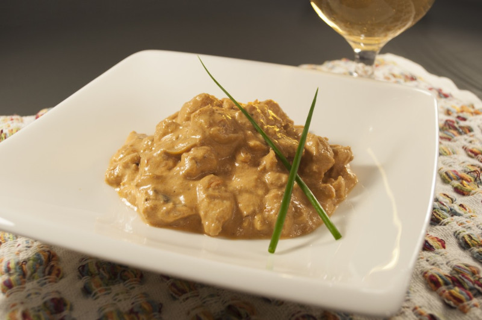
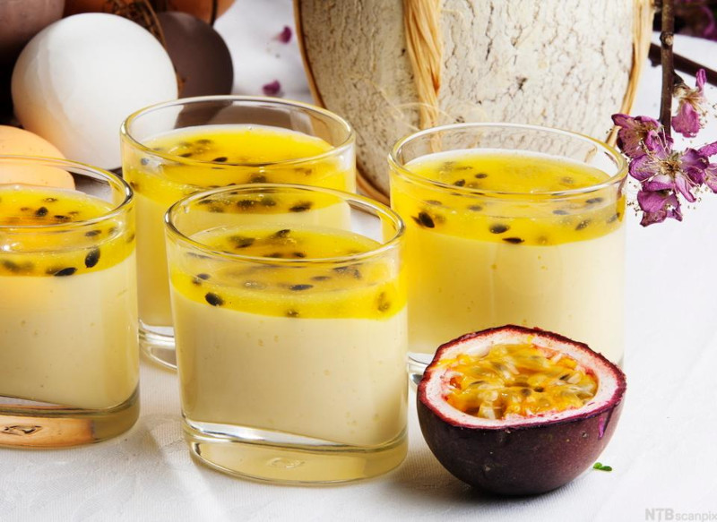
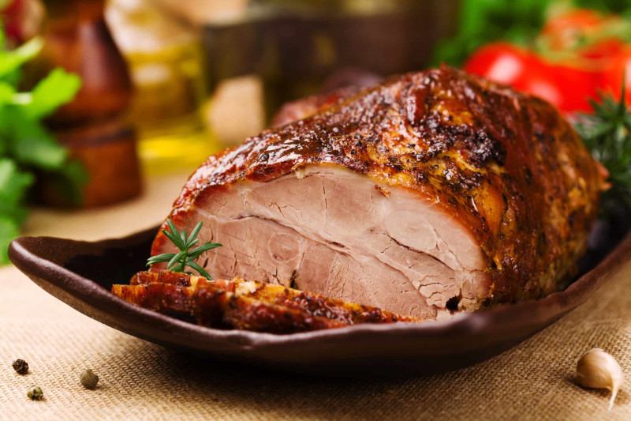
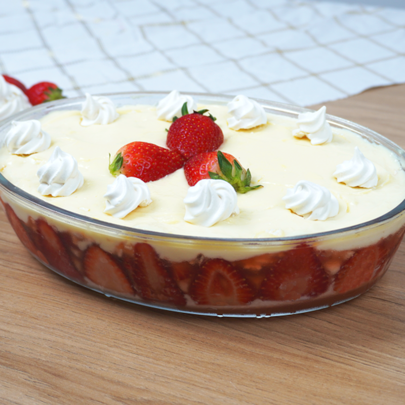

Strogonoff de Frango

Ingredientes
- 500g de peito de frango cortado em cubos
- 2 caixinhas de creme de leite
- 1 cebola média
- 4 dentes de alho
- 1 lata de milho
- Ketshup à gosto
- Molho de tomate à gosto
- Sal à gosto
Modo de preparo:
- Tempere o frango com os temperos de sua preferência, doure-o e reserve.
- Em uma outra penala, refogue o alho e a cebola, acrescente o molho de tomate e o hetshup, deixe refogar um pouco.
- Acrescente o frango e o milho, misture bem, adicione o creme de leite e acerte o sal.
- Deixe cozinhar um pouco para que o frango absorva o sabor do molho e fique bem suculento.
- Após finalizado, é so servir e se deliciar com essa deliciosa receita.
Mousse de Maracujá

Ingredientes
- 1 caixinha de leite condensado
- 1 caixinha de creme de leite
- Suco da polpa de 4 maracujás
- Polpa de 2 maracujás para decorar(opicional)
- 1 pacote de gelatina incolor
Modo de preparo:
- Dissolva a gelatina conforme manda a embalagem, depois acrescente todos os ingredientes dentro do liquidificador.
- Coloque em uma travessa ou porcione da forma que prefirir, gosto de deixar nos copinhos pois fica mais prático
- Leve para geladeira até ficar firme.
- Acrescente a polpa por cima para decorar e está pronto, só servir e esperar os elogios.
Pernil Assado

Ingredientes
- 1kg de pernil inteiro
- 6 dentes de alho amassado
- 1 limão
- 2 colheres de sopa de molho inglês
- 1 colher de sopa de pápicra defumada
- 1 colher de sopa de chimichurri
- 1 colher de sopa de sal
- Ervas finas à gosto
Modo de preparo:
- Faça uma marinada com o limão, o molho inglês, o alho e o restante dos temperos, incluindo o sal. Reserve para depois.
- Com uma faca, faça furos por toda a peça de pernil, acrescente a marinada e embrulhe-o em plastíco filme.
- Deixe na geladeira por 24 horas.
- No outro dia, pré-aqueça o forno em 180 graus, deixo-o assar por 40 minutos embrulhado no papel alumínio.
- Retire o papel alumínio e deixe assar até dourar.
- Retire do forno e deixe-o esfriar por 5 minutos.
- Corte e sirva.
Pavê de Morango

Ingredientes
Creme branco
- 1 caixa de leite
- 1 caixa de leite condensado
- Essencia de baunilha à gosto
- 2 a 3 colheres de amido de milho
Recheio
- 2 caixas morango
- 2 pacote de biscoito maisena
Modo de preparo:
- Em uma panela acrescente o leite, o leite condensado,a essencia de baunilha.
- Leva ao fogo médio e misture bem.
- Dilua o amido em um pouco de água e acresncente ao creme.
- Mistire até engrossar e chegar numa textura mais cremosa.
- Reserve.
- Lave os morangos e pique-os em cubos, guarde um pouco para decorar.
- Depois que o creme esfriar, começe a montar com uma camada de creme e intercalando com o biscoito e o morango, e terminando com uma camada de creme.
- Finalize decorando da maneira que prefirir.
- Leve para geladeira por 2 horas e está pronto.